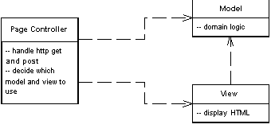

| Home | Articles | Talks | Links | Contact Me | ISA | ThoughtWorks |
An object that handles a request for a specific page or action on a web site

Most people's basic web experience is with static HTML pages. When you request static HTML you pass to the web server the name and path for a HTML document stored on the web server. The key notion is that each page on the web site is a separate document on the server. With dynamic pages things can get much more interesting since there is a much more complex relationship between path names and the file that responds. However the approach of one path leading to one file that handles the request is a simple model to understand.
As a result Page Controller has one input controller for each logical page of the web site. That controller may be the page itself, as it often is in server page environments, or it may be a separate object that corresponds to that page.
The basic idea behind a Page Controller is to have one module on the web server act as the controller for each page on the web site. In practice, it doesn't work out to exactly one per page, since sometimes you may hit a link and get a different page depending on some dynamic information. More strictly the controllers tie to each action on the web site, where an action may be clicking a link or a button.
The Page Controller can be structured either as a script (CGI script, servlet, ...), or a server page (ASP, PHP, JSP, ...). Using a server page usually combines the Page Controller and a Template View into the same file. While this works well for the Template View it works less well for the Page Controller since it is more awkward to properly structure the module. If the page is a simple display then this is not a problem. If there is logic involved in either pulling data out of the request, or deciding which actual view to display, then you can end up with awkward scriptlet code in the server page.
One way of dealing with this scriptlet code is to use a helper object. In this case the first thing the server page does is to call the helper object to handle all the logic. The helper may return control to the original server page, or it may forward to a different server page to act as the view. In this case the server page is the handler of the request, but most of the controller logic lies in the helper object
Another approach is to let a script be the handler and controller. The web server passes control to the script, the script carries out the controller's responsibilities, and finally forward to an appropriate view to display any results.
The basic responsibilities of a Page Controller are:
The Page Controller need not be a single class, it can invoke helper objects. This is particularly useful if several handlers need to do similar tasks. A helper class can then be a good spot to put any code that would otherwise be duplicated.
There's no reason why you can't have some URLs handled by server pages and some URLs handled by scripts. Any URLs that have little or no controller logic are best handled with a server page, since that provides a simple mechanism that's easy to understand and modify. Any URLs with more complicated logic go to a script. I've often come across teams who want to handle everything the same way, either everything is a server page or everything is a script. Any advantages of consistency in such an application are usually offset by the problems of either scriptlet laden server pages or lots of simple pass-through scripts.
The main decision point is whether to use Page Controller or Front Controller. Of the two Page Controller is the most familiar one to work with and leads to a natural structuring mechanism where particular actions are handled by particular server pages or script classes. You thus have to trade off the greater complexity of the Front Controller against the various advantages that it offers, most of which make a difference in web sites that have more navigational complexity.
Page Controller works particularly well in a site where most of the controller logic is pretty simple. In this case most URLs can be handled with a server page with the more complicated cases in helpers. When you're controller logic is simple, Front Controller adds a lot of overhead.
It's not uncommon to have a mix in a site where some requests are dealt with by Page Controllers and others are dealt with by Front Controllers, particularly when a team is refactoring from one to another. The two patterns actually mix together without too much trouble.
A simple example of an action controller is to display some information about something. Here we'll use an example of displaying some information about a recording artist. The URL would run something along the lines of http://www.thingy.com/recordingApp/artist?name=danielaMercury
Figure 1: Classes involved in a simple display with an action controller servlet and JSP view
The web server needs to be configured to recognize "/artist" as a call to ArtistController. In Tomcat you do this with the following code in the web.xml file.
<servlet>
<servlet-name>artist</servlet-name>
<servlet-class>actionController.ArtistController</servlet-class>
</servlet>
<servlet-mapping>
<servlet-name>artist</servlet-name>
<url-pattern>/artist</url-pattern>
</servlet-mapping>
The artist controller needs to implement a method to handle the request.
class ArtistController...
public void doGet(HttpServletRequest request, HttpServletResponse response)
throws IOException, ServletException {
Artist artist = Artist.findNamed(request.getParameter("name"));
if (artist == null)
forward("/MissingArtistError.jsp", request, response);
else {
request.setAttribute("helper", new ArtistHelper(artist));
forward("/artist.jsp", request, response);
}
}
Although this is a very simple case, it covers the salient points. First the controller needs to get create the necessary model objects to do their thing, in this case it just need to find the correct model object to display. The second part is to put the right information in the http request so that the JSP can display it properly. In this case it creates a helper and puts it into the request. Finally it forwards to the Template View to handle the display of the data. Forwarding is a common behavior, so it sits naturally on a superclass for all action controllers
class ActionServlet...
protected void forward(String target,
HttpServletRequest request,
HttpServletResponse response)
throws IOException, ServletException
{
RequestDispatcher dispatcher = getServletContext().getRequestDispatcher(target);
dispatcher.forward(request, response);
}
The main point of coupling between the Template View and the Page Controller is the parameter names in the request to pass on any objects that the JSP needs to use.
In this case the controller logic is really very simple, but as we get more complex controller logic we can continue to use the servlet as a controller. We can have a similar behavior for albums, with the twist that classical albums both have a different model object and are rendered with a different JSP. To do this behavior we can again use a controller class.
class AlbumController...
public void doGet(HttpServletRequest request, HttpServletResponse response)
throws IOException, ServletException
{
Album album = Album.find(request.getParameter("id"));
if (album == null) {
forward("/missingAlbumError.jsp", request, response);
return;
}
request.setAttribute("helper", album);
if (album instanceof ClassicalAlbum)
forward("/classicalAlbum.jsp", request, response);
else
forward("/album.jsp", request, response);
}
Notice that in this case I'm using the model objects as the helper, rather than creating a separate helper class. This is worth doing if the helper class would otherwise be just a dumb forwarder to the model class. When doing this make sure that the model class doesn't have any servlet dependent code in it - if there is any servlet dependent code it should sit in a separate helper class.
Using a servlet as a controller is one route to take, but the most common route is to have the server page itself be the controller. The problem with this approach is that it results in scriptlet code at the beginning of the server page, and as you may have gathered I think that scriptlet code has the same relationship to well-designed software that professional wrestling does to sport.
Despite this you can have a server page as the handler of the request, while delegating control to the helper to actually carry out the controller function. This preserves the simple property of having your URLs be denoted by server pages. In this case I'll do this for the album display, where you can display an album with a URL of the form http://localhost:8080/isa/album.jsp?id=zero. Most albums are displayed directly with the album JSP, but classical albums require a different display and are displayed with a classicalAlbum JSP.
This controller behavior appears in a helper class to the JSP. The helper is set up in the album JSP itself.
album.jsp... <jsp:useBean id="helper" class="actionController.AlbumConHelper"/> <%helper.init(request, response);%>
The call to init sets the helper up to carry out the controller behavior.
class AlbumConHelper extends HelperController...
public void init(HttpServletRequest request, HttpServletResponse response) {
super.init(request, response);
if (getAlbum() == null) forward("missingAlbumError.jsp", request, response);
if (getAlbum() instanceof ClassicalAlbum) {
request.setAttribute("helper", getAlbum());
forward("/classicalAlbum.jsp", request, response);
}
}
Common helper behavior naturally sits on a helper superclass.
class HelperController...
public void init(HttpServletRequest request, HttpServletResponse response) {
this.request = request;
this.response = response;
}
protected void forward(String target,
HttpServletRequest request,
HttpServletResponse response)
{
try {
RequestDispatcher dispatcher = request.getRequestDispatcher(target);
if (dispatcher == null) response.sendError(response.SC_NO_CONTENT);
else dispatcher.forward(request, response);
} catch (IOException e) {
throw new ApplicationException(e);
} catch (ServletException e) {
throw new ApplicationException(e);
}
}
The key difference between the controller behavior here and that when using a servlet, is that the handler JSP is also the default view. Unless the controller forwards to a different JSP, control reverts to the original handler. This is an advantage when you have pages where most of the time the JSP directly acts as the view. In these cases there's no forwarding to be done. The initialization of the helper acts to kick off any model behavior and set things up for the view later on. It's a simple model to follow, since people generally associate a web page with the server page that is the view for the page. This also often fits naturally with web server configuration.
The call to initialize the handler is rather clumsy, in a JSP environment this awkwardness can be handled much better with a custom tag. Such a tag can automatically create an appropriate object, put it in the request, and initialize it. With that all you need is to put a simple tag into the JSP page.
<helper:init name = "actionController.AlbumConHelper"/>
The custom tag's implementation then does the work.
class HelperInitTag extends HelperTag...
private String helperClassName;
public void setName(String helperClassName) {
this.helperClassName = helperClassName;
}
public int doStartTag() throws JspException {
HelperController helper = null;
try {
helper = (HelperController) Class.forName(helperClassName).newInstance();
} catch (Exception e) {
throw new ApplicationException("Unable to instantiate " + helperClassName, e);
}
initHelper(helper);
pageContext.setAttribute(HELPER, helper);
return SKIP_BODY;
}
private void initHelper(HelperController helper) {
HttpServletRequest request = (HttpServletRequest) pageContext.getRequest();
HttpServletResponse response = (HttpServletResponse) pageContext.getResponse();
helper.init(request, response);
}
class HelperTag... public static final String HELPER = "helper";
If I'm going to use a custom tag like this, I might as well make custom tags for property access too.
class HelperGetTag extends HelperTag...
private String propertyName;
public void setProperty(String propertyName) {
this.propertyName = propertyName;
}
public int doStartTag() throws JspException {
try {
pageContext.getOut().print(getProperty(propertyName));
} catch (IOException e) {
throw new JspException("unable to print to writer");
}
return SKIP_BODY;
}
class HelperTag...
protected Object getProperty(String property) throws JspException {
Object helper = getHelper();
try {
final Method getter = helper.getClass().getMethod(gettingMethod(property), null);
return getter.invoke(helper, null);
} catch (Exception e) {
throw new JspException
("Unable to invoke " + gettingMethod(property) + " - " + e.getMessage());
}
}
private Object getHelper() throws JspException {
Object helper = pageContext.getAttribute(HELPER);
if (helper == null) throw new JspException("Helper not found.");
return helper;
}
private String gettingMethod(String property) {
String methodName = "get" + property.substring(0, 1).toUpperCase() +
property.substring(1);
return methodName;
}
(You may be thinking that it's better to use the Java beans mechanism than to just invoke a getter using reflection. If so, you're probably right... and also probably intelligent enough to figure out how to change the method to do that)
With the getting tag defined, I can use it to pull information out of the helper. The tag is both shorter and removes the chances of me mizpelling 'helper'.
<B><helper:get property = "title"/></B>
The web system in .NET is designed to work with the Page Controller and Template View patterns, although you can certainly decide to handle web events with a different approach. With this example, I'll take the preferred style of .NET, with the presentation layer built on top of a domain using Table Module, using data sets as the main carrier of information between the layers.
For our example this time we'll have a page that displays runs scored and the run rate for one innings of a cricket match. As I know I'll have many readers who are afflicted with no material experience of this art form, I can summarize by saying that the runs scored is the score of batsman and the run rate is how many runs they score divided by the number of balls they face. The runs scored and balls faced are in the database, the run rate needs to be calculated by the application - a tiny but pedagogically useful piece of domain logic.
The handler in this design is an ASP.NET web page, captured in a .aspx file. As with other server page constructs, the aspx file allows you to embed programming logic directly into the page as scriptlets. Since you know I'd rather drink bad beer than write scriptlets, you know there's little chance that I'd want to do that. My savior in this case is the code behind mechanism that allows you to associate a regular file and class with the aspx page. You signal this in the header of the aspx page.
<%@ Page language="c#" Codebehind="bat.aspx.cs" AutoEventWireup="false" trace="False" Inherits="batsmen.BattingPage" %>
The page is setup as a subclass of the code behind class, and as such can use all the protected properties and methods of the code behind. The page object is the handler of the request, and the code behind can define how to handle the request by defining a Page_Load method. If most pages follow a common flow, I can define a Layer Supertype that has a template method for this.
class CricketPage...
protected void Page_Load(object sender, System.EventArgs e) {
db = new OleDbConnection(DB.ConnectionString);
if (hasMissingParameters())
errorTransfer (missingParameterMessage);
DataSet ds = getData();
if (hasNoData (ds))
errorTransfer ("No data matches your request");
applyDomainLogic (ds);
DataBind();
prepareUI(ds);
}
The template method breaks the handling of the request down into a number of common steps. This way we can define a single common flow for handling web requests, while allowing each Page Controller to supply implementations for the specific steps. If you do this, you will find that once you've written a few Page Controllers, you will find what common flow to use for the template method. If any page needs to do something completely different, it can always override the page load method.
The first task is to do validation on the parameters coming into the page. In a more realistic example this might do initial sanity checking of various form values, but in this case we are just decoding a URL of the form http://localhost/batsmen/bat.aspx?team=England&innings=2&match=905. The only validation in this example is that the various parameters required for the database query are present. As usual I've been overly simplistic in the error handling until somebody writes a good set of patterns on validation. So here the particular page defines a set of mandatory parameters and the Layer Supertype has the logic for checking them.
class CricketPage...
abstract protected String[] mandatoryParameters();
private Boolean hasMissingParameters() {
foreach (String param in mandatoryParameters())
if (Request.Params[param] == null) return true;
return false;
}
private String missingParameterMessage {
get {
String result = "<P>This page is missing mandatory parameters:</P>";
result += "<UL>";
foreach (String param in mandatoryParameters())
if (Request.Params[param] == null)
result += String.Format("<LI>{0}</LI>", param);
result += "</UL>";
return result;
}
}
protected void errorTransfer (String message) {
Context.Items.Add("errorMessage", message);
Context.Server.Transfer("Error.aspx");
}
class BattingPage...
override protected String[] mandatoryParameters() {
String[] result = {"team", "innings", "match"};
return result;
}
The next stage is to pull the data out of the database into a ADO.NET's disconnected data set object. In this case this is a single query to the batting table.
class CricketPage...
abstract protected DataSet getData();
protected Boolean hasNoData(DataSet ds) {
foreach (DataTable table in ds.Tables)
if (table.Rows.Count != 0) return false;
return true;
}
class BattingPage...
override protected DataSet getData() {
OleDbCommand command = new OleDbCommand(SQL, db);
command.Parameters.Add(new OleDbParameter("team", team));
command.Parameters.Add(new OleDbParameter("innings", innings));
command.Parameters.Add(new OleDbParameter("match", match));
OleDbDataAdapter da = new OleDbDataAdapter(command);
DataSet result = new DataSet();
da.Fill(result, Batting.TABLE_NAME);
return result;
}
private const String SQL =
@"SELECT * from batting
WHERE team = ? AND innings = ? AND matchID = ?
ORDER BY battingOrder";
Now the domain logic gets its turn to play. The domain logic is organized as a Table Module. The controller passes the retrieved data set to the Table Module to process.
class CricketPage...
protected virtual void applyDomainLogic (DataSet ds) {}
class BattingPage...
override protected void applyDomainLogic (DataSet dataSet) {
batting = new Batting(dataSet);
batting.CalculateRates();
}
At this point the controller part of the page hander is done. By this I mean that in classic Model View Controller terms the controller should now hand over to the view to do display. In this design the BattingPage acts as both the controller and the view and the last call to prepareUI is part of the view behavior, so I can say farewell to this example in this pattern. However I suspect you'll find this to lack a certain dramatic closure, so you can find the example continued in Template View.
 |  |